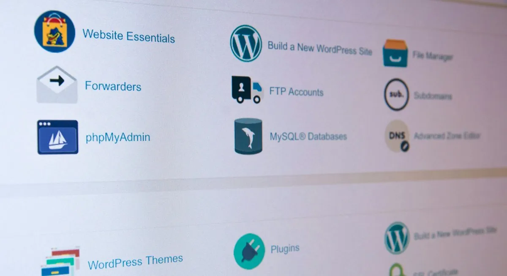

Vodič za učenje administriranja nad web sajtom
Zašto je važna administracija web sajta?
Bilo da ste developer ili samo vlasnik web sajta administracija nad vašim sajtom je veoma važna iz više razloga.
Negde prvi razlog zašto je važna je bezbednost vašeg sajta na webu bilo da je pravljen u CMS tehnologijama kao sto su Wordpress,Joomla itd ili je korišćena neka druga tehnologija.
Naročito CMS tehnologije su osetljive na hakovanje,dnevno se hakuje više desetina hiljada web sajtova širom sveta.
Ostljivost takvih tehnologija dolazi od toga što php developeri koji pišu pluginove koje uključujete u svoj sajt ne odrade dobru validaciju i sanitizaciju podataka da bi brže zavrsili posao.
Ako ste korisnik takvih tehnologija preporučujemo da ako ste u mogućnosti koristite većinom plaćene verzije pluginova jer ako su verzije plaćene tim je veća odgovornost developera da to uradi kako treba.
Takodje je važno da u vašem admin delu uvek apdejtujete redovno sve pluginove čija je nova verzija dostupna.
Takodje je potrebno preduzeti i druge korake što se bezbednosti sajta tiče,na ovoj youtube plejlisti imate korisnih video-a u oblasti Administracije sajtova.
Sve u svemu bezbednosti nikad dosta i nikad nije viška,imate na gore navedenoj plejlisti video kako da aktivirate "2FA" ili ti dvostruku autentifikaciju da se prosecni hakeri ne bi igrali sa vašim cPanel-om.
Osim bezbednosti postoje i razni guglovi alati za praćenje dešavanja u vezi vaših stranica no više o tome u sledećoj sekciji.
Važnost praćenja statistike
Isto tako važno je da znate da pratite statistiku na vašem sajtu ili stranici a to mozete raditi na 2 načina.
Gugl ima besplatan alat za praćenje indeksiranja i pozicioniranja vaših stranica po starom zvan "webmaster tools" a po novom "google search console".
Takodje drugo oružje koje vam je na raspolaganju po pitanju statistike je "awstats" deo u vašem cPanel-u i tu takodje možete prilično pouzdano pratiti posete vašem sajtu,broj poseta,najpopularnije stranice,sa kojih uredjaja ljudi dolaze itd itd.
Dakle na osnovu te analitike vi možete videti koje stranice trebate popraviti da imaju bolji ranking i još mnogo toga.
U gore navedenoj plejlisti na youtube-u imate kompletno uputstvo za korišćenje gogle search console od toga kako registrovati wwebsajt na gugl do praćenja indeksiranja i rankinga stranica.
Sve o alatu sa slike imateu video-u na playlistui pomenutoj u prethodnoj sekciji.
Google takodje ima napredniji alat "google analytics" ali on zahteva ubacivanje skripti na svaku stranicu sto otežava učitavanje iste pa vam ne bih preporučio integraciju istog alata na vaše stranice osim ako plaćate reklamu guglu recimo za neke proizvode,pa da imate jasan uvid koliko poseta je bilo i kakvih.
Hvala na poseti i želim vam srećno učenje.